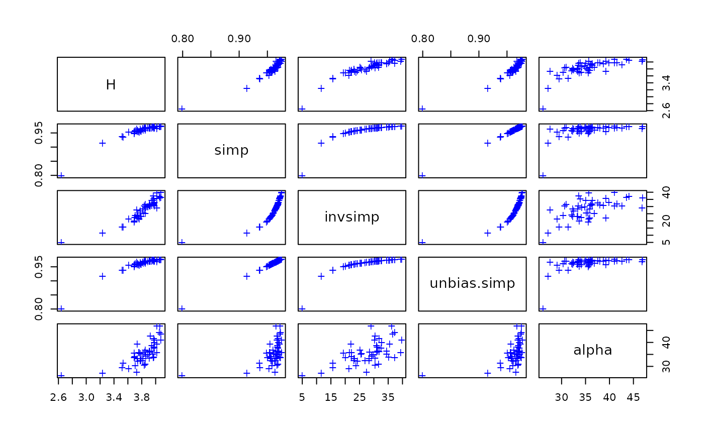

diversity.RdShannon, Simpson, and Fisher diversity indices and species richness.
diversity(x, index = "shannon", groups, equalize.groups = FALSE,
MARGIN = 1, base = exp(1))
simpson.unb(x, inverse = FALSE)
fisher.alpha(x, MARGIN = 1, ...)
specnumber(x, groups, MARGIN = 1)Community data, a matrix-like object or a vector.
Diversity index, one of "shannon",
"simpson" or "invsimpson".
Margin for which the index is computed.
The logarithm base used in shannon.
Use inverse Simpson similarly as in
diversity(x, "invsimpson").
A grouping factor: if given, finds the diversity of communities pooled by the groups.
Instead of observed abundances, standardize all communities to unit total.
Parameters passed to the function.
Shannon or Shannon--Weaver (or Shannon--Wiener) index is defined as \(H' = -\sum_i p_i \log_{b} p_i\), where \(p_i\) is the proportional abundance of species \(i\) and \(b\) is the base of the logarithm. It is most popular to use natural logarithms, but some argue for base \(b = 2\) (which makes sense, but no real difference).
Both variants of Simpson's index are based on \(D = \sum p_i^2\). Choice simpson returns \(1-D\) and
invsimpson returns \(1/D\).
simpson.unb finds unbiased Simpson indices for discrete
samples (Hurlbert 1971, eq. 5). These are less sensitive to sample
size than the basic Simpson indices. The unbiased indices can be only
calculated for data of integer counts.
The diversity function can find the total (or gamma) diversity
of pooled communities with argument groups. The average alpha
diversity can be found as the mean of diversities by the same groups,
and their difference or ratio is an estimate of beta diversity (see
Examples). The pooling can be based either on the observed
abundancies, or all communities can be equalized to unit total before
pooling; see Jost (2007) for discussion. Functions
adipart and multipart provide canned
alternatives for estimating alpha, beta and gamma diversities in
hierarchical settings.
fisher.alpha estimates the \(\alpha\) parameter of
Fisher's logarithmic series (see fisherfit).
The estimation is possible only for genuine
counts of individuals.
None of these diversity indices is usable for empty sampling units without any species, but some of the indices can give a numeric value. Filtering out these cases is left for the user.
Function specnumber finds the number of species. With
MARGIN = 2, it finds frequencies of species. If groups
is given, finds the total number of species in each group (see
example on finding one kind of beta diversity with this option).
Better stories can be told about Simpson's index than about Shannon's index, and still grander narratives about rarefaction (Hurlbert 1971). However, these indices are all very closely related (Hill 1973), and there is no reason to despise one more than others (but if you are a graduate student, don't drag me in, but obey your Professor's orders). In particular, the exponent of the Shannon index is linearly related to inverse Simpson (Hill 1973) although the former may be more sensitive to rare species. Moreover, inverse Simpson is asymptotically equal to rarefied species richness in sample of two individuals, and Fisher's \(\alpha\) is very similar to inverse Simpson.
A vector of diversity indices or numbers of species.
Fisher, R.A., Corbet, A.S. & Williams, C.B. (1943). The relation between the number of species and the number of individuals in a random sample of animal population. Journal of Animal Ecology 12, 42--58.
Hurlbert, S.H. (1971). The nonconcept of species diversity: a critique and alternative parameters. Ecology 52, 577--586.
Jost, L. (2007) Partitioning diversity into independent alpha and beta components. Ecology 88, 2427--2439.
These functions calculate only some basic indices, but many
others can be derived with them (see Examples). Facilities related to
diversity are discussed in a vegan vignette that can be read
with browseVignettes("vegan"). Functions renyi
and tsallis estimate a series of generalized diversity
indices. Function rarefy finds estimated number of
species for given sample size. Beta diversity can be estimated with
betadiver. Diversities can be partitioned with
adipart and multipart.
data(BCI, BCI.env)
H <- diversity(BCI)
simp <- diversity(BCI, "simpson")
invsimp <- diversity(BCI, "inv")
## Unbiased Simpson
unbias.simp <- simpson.unb(BCI)
## Fisher alpha
alpha <- fisher.alpha(BCI)
## Plot all
pairs(cbind(H, simp, invsimp, unbias.simp, alpha), pch="+", col="blue")

## Species richness (S) and Pielou's evenness (J):
S <- specnumber(BCI) ## rowSums(BCI > 0) does the same...
J <- H/log(S)
## beta diversity defined as gamma/alpha - 1:
## alpha is the average no. of species in a group, and gamma is the
## total number of species in the group
(alpha <- with(BCI.env, tapply(specnumber(BCI), Habitat, mean)))
#> OldHigh OldLow OldSlope Swamp Young
#> 85.75000 91.76923 91.58333 94.00000 90.00000
(gamma <- with(BCI.env, specnumber(BCI, Habitat)))
#> OldHigh OldLow OldSlope Swamp Young
#> 158 210 183 128 117
gamma/alpha - 1
#> OldHigh OldLow OldSlope Swamp Young
#> 0.8425656 1.2883487 0.9981802 0.3617021 0.3000000
## similar calculations with Shannon diversity
(alpha <- with(BCI.env, tapply(diversity(BCI), Habitat, mean))) # average
#> OldHigh OldLow OldSlope Swamp Young
#> 3.638598 3.876413 3.887122 4.003780 3.246729
(gamma <- with(BCI.env, diversity(BCI, groups=Habitat))) # pooled
#> OldHigh OldLow OldSlope Swamp Young
#> 3.873186 4.284972 4.212098 4.164335 3.387536
## additive beta diversity based on Shannon index
gamma-alpha
#> OldHigh OldLow OldSlope Swamp Young
#> 0.2345878 0.4085595 0.3249760 0.1605548 0.1408068